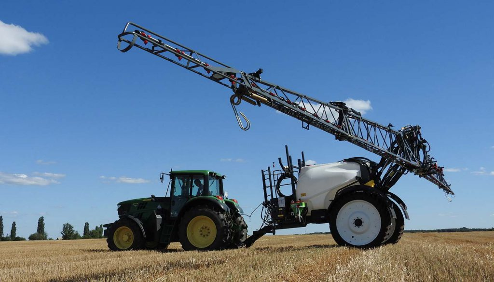

ATLANT piekabināmie miglotāji ar GPS vadību
ATLANT 3200-21
Uzticams un augstas veiktspējas miglotājs. Vienkāršā un ļoti izturīga konstrukcija garantē ilgu mašīnas kalpošanas laiku.

ATLANT 3200-24
Uzticams un augstas veiktspējas miglotājs. Vienkāršā un ļoti izturīga konstrukcija garantē ilgu mašīnas kalpošanas laiku.
ATLANT 4200-28
Šī modeļa smidzinātāja standarta aprīkojumā ietilpst ietilpīga tvertne (4 200 litri), kurā var ielej gan dažādu augu aizsardzības līdzekļu, gan šķidro mēslošanas līdzekļu šķīdumu.

ATLANT 4200-32
Modelis ir aprīkots ar hidropneimatisko balstiekārtu un tilpuma stieni.